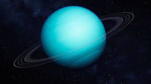

Uranus is an ice giant with a blue-green color caused by methane in its atmosphere. It rotates on its side relative to its orbit, giving it extreme seasonal variations. Uranus has a faint ring system and multiple moon